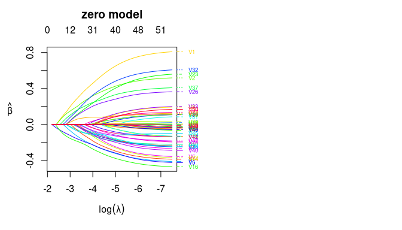
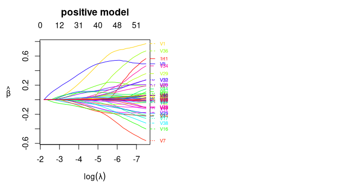

The personalized2part package implements the methodology of Huling, Smith, and Chen (2020), which allows for subgroup identification for semi-continuous outcomes by estimating individualized treatment rules. It uses a two part modeling (or hurdle modeling) framework to handle semi-continuous data by modeling separately the positive part of the outcome and an indicator of whether each outcome is positive, but still results in a single treatment rule. High dimensional data is handled with a cooperative lasso penalty, which encourages the coefficients in the two models to have the same sign.
Installation
You can install the development version from GitHub with:
# install.packages("devtools") devtools::install_github("jaredhuling/personalized2part")
Example
This is a basic example which shows you how to solve a common problem:
Simulate semicontinuous data with a heterogeneous treatment effect:
set.seed(1) dat <- sim_semicontinuous_data(n.obs = 300, n.vars = 50) x <- dat$x y <- dat$y trt <- dat$trt
Use the built-in function create.propensity.function from the personalized package to construct a function that fits a propensity score model using 10-fold cross fitting:
propens_func <- create.propensity.function(crossfit = TRUE, nfolds.crossfit = 10, cv.glmnet.args = list(type.measure = "auc"))
Use the built-in function create.augmentation.function from the personalized package to construct outcome augmentation functions for the zero part model using 10-fold cross fitting:
aug_func_binary <- create.augmentation.function(family = "binomial", crossfit = TRUE, nfolds.crossfit = 10, cv.glmnet.args = list(type.measure = "auc"))
Use the built-in function HDtweedie_kfold_aug from the personalized2part package to construct outcome augmentation functions for the positive part model using 10-fold cross fitting using a penalized gamma regression model:
aug_func_positive <- function(x, y, trt) { HDtweedie_kfold_aug(x, y, trt, K = 10, p = 2, interactions = TRUE) }
fitted_2part_subgrp_model <- fit_subgroup_2part(x, y, trt, propensity.func = propens_func, propensity.func.positive = propens_func, augment.func.zero = aug_func_binary, augment.func.positive = aug_func_positive) ## the model print display takes the same form as fitted models from ## the personalized package fitted_2part_subgrp_model #> family: 2part #> loss: 2part #> method: #> cutpoint: 1 #> propensity #> function: propensity.func #> #> benefit score: f(x), #> Trt recom = 1*I(f(x)>c)+0*I(f(x)<=c) where c is 'cutpoint' #> #> Average Outcomes: #> Recommended 0 Recommended 1 #> Received 0 7.1015 (n = 93) 0.3277 (n = 49) #> Received 1 0.4653 (n = 47) 6.4159 (n = 111) #> #> Treatment effects conditional on subgroups: #> Est of E[Y|T=0,Recom=0]-E[Y|T=/=0,Recom=0] #> 6.6363 (n = 140) #> Est of E[Y|T=1,Recom=1]-E[Y|T=/=1,Recom=1] #> 6.0882 (n = 160) #> #> NOTE: The above average outcomes are biased estimates of #> the expected outcomes conditional on subgroups. #> Use 'validate.subgroup()' to obtain unbiased estimates. #> #> --------------------------------------------------- #> #> Benefit score quantiles (f(X) for 1 vs 0): #> 0% 25% 50% 75% 100% #> 4.414e-03 3.333e-01 1.220e+00 5.312e+00 2.131e+02 #> #> --------------------------------------------------- #> #> Summary of individual treatment effects: #> E[Y|T=1, X] / E[Y|T=0, X] #> #> Note: for survival outcomes, the above ratio is #> E[g(Y)|T=1, X] / E[g(Y)|T=0, X], #> where g() is a monotone increasing function of Y, #> the survival time #> #> Min. 1st Qu. Median Mean 3rd Qu. Max. #> 0.00441 0.33333 1.21976 10.03182 5.31193 213.08937
We can plot the coefficient curves for the two models as the following:

plot(fitted_2part_subgrp_model$model$hd2part.fit, "positive")

Now evaluate value function on test set based on the estimated individualized treatment rule and compare with average outcome (a value function larger than the average outcome means that the ITR results in better outcomes than standard practice). The predict function returns predicted values for the heterogeneous treatment effect in terms of the risk ratio E[Y|X, T = 1]/E[Y|X, T = − 1], so greater than 1 means the treatment is beneficial (if larger outcomes are preferred).
dat.test <- sim_semicontinuous_data(n.obs = 10000, n.vars = 50) x.test <- dat.test$x y.test <- dat.test$y predicted_hte <- predict(fitted_2part_subgrp_model, x.test) ## estmated test set value function: personalized2part:::computeValue(y.test, predicted_hte, dat.test$trt, pi.x = dat.test$pi.x, cutoff = 1) #> [1] 4.708711 ## average outcome in the test set: mean(dat.test$y) #> [1] 3.854057 # We can see that the estimated treatment rule results in better outcomes for the test set
Now let’s compare with simply using a squared error loss under the framework of Chen, et al (2017) to estimate an ITR:
fsm_log <- fit.subgroup(x, log(y+0.1), trt, propensity.func = propens_func, augment.func = create.augmentation.function(family="gaussian"), loss = "sq_loss_lasso") fsm <- fit.subgroup(x, y, trt, propensity.func = propens_func, augment.func = create.augmentation.function(family="gaussian"), loss = "sq_loss_lasso") pred_hte_sqloss_log <- predict(fsm_log, x.test) pred_hte_sqloss <- predict(fsm, x.test) ## the value function is smaller than for the 2 part model personalized2part:::computeValue(y.test, pred_hte_sqloss, dat.test$trt, pi.x = dat.test$pi.x, cutoff = 0) #> [1] 1.763163 personalized2part:::computeValue(y.test, pred_hte_sqloss_log, dat.test$trt, pi.x = dat.test$pi.x, cutoff = 0) #> [1] 4.172806
Reference
1
Huling J, Smith M, Chen G (2020). A two-part framework for estimating individualized treatment rules from semi-continuous outcomes. Journal of the American Statistical Association, in press.
2
Chen S, Tian L, Cai T, Yu M (2017). A general statistical framework for subgroup identification and comparative treatment scoring. Biometrics, 73(4):1199-209.